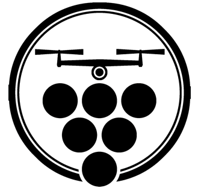

Baptiste Gavalda.
Junior Developer.
Aerovigne
Projet d'étude. Nous voulions aider les vignerons dans leur combat contre les maladis de vigne. Un drone survolerait les vignes de façon automatisé et détecterai les maladie avec une caméra multispectrale.
Nous somme arrivé à une solution simulé controlable depuis une interface graphique web.
Liked Twitter Images To Google Drive
Sauvegarde automatique de vos images aimées sur Twitter vers votre Google Drive.